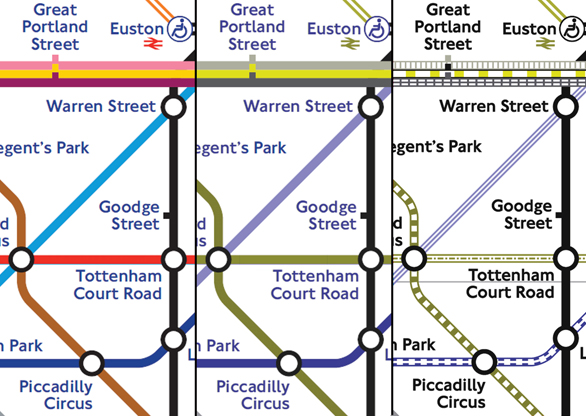
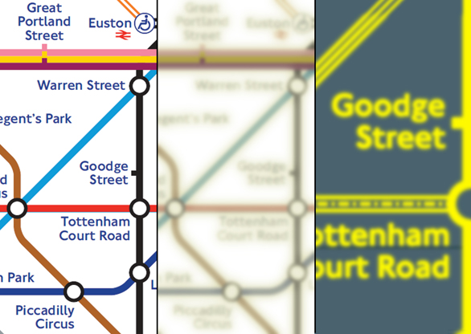

Accessibility
It's not boring, honest!

So, what is accessibility anyway?
"Web accessibility means that people with disabilities can perceive, understand, navigate, and interact with the Web, and that they can contribute to the Web."
- w3.org
What disabilities?
- Visual disabilities
- Motor/physical
- Auditory
- Cognitive and neurological
POUR
- Perceivable (content is 'visible')
- Operable (navigable)
- Understandable (both information and UI)
- Robust (works across user agents)
why? it sounds boring
8.5%
of the population has a disability that prohibits computer use (source: http://webaim.org/blog/the-ada-and-the-web-concerns-and-misconceptions/)
To put that in context, on nice.org...
- 20.3% - Chrome latest
- 15.6% - IE11
- 13.8% - Safari
- 5.0% - IE8
The legal side
- Equality Act 2010
- Maguire vs SOCOG 2000
It'll probably make...
- More semantic markup
- Better structured markup
- Minor SEO benefits
How?

Everybody's responsibility

And then...
- Know POUR
- Know the spec: A, AA
- Checklists
- Plenty of tooling
Colour (Perceivable)

Vischeck


Red-green colourblind
Cataracts
Colour contrast
"1.4.3 Contrast (Minimum): The visual presentation of text and images of text has a contrast ratio of at least 4.5:1"
White on white = 1:1
White on black = 21:1
Mid grey (#777) on white = 4.5:1
nice.org
3.75:1

nice.org

Screenreader demo
Takeaways...
- ChromeVox
- Squizlabs CodeSniffer (demo) and lists
- Know POUR
- ARIA attributes
- WAVE WebAIM
- Contrast ratio checkers
- Vischeck